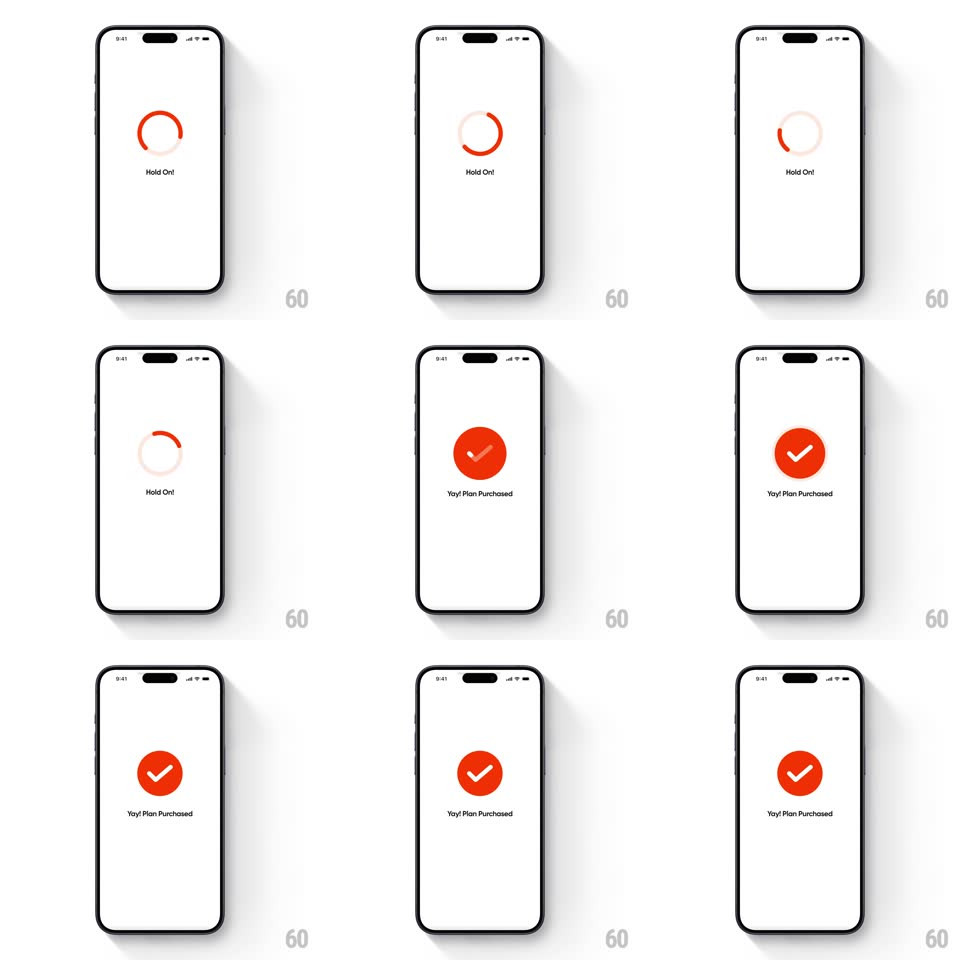

Media
Frame-by-frame

Rebuild this animation 1:1: Swiggy's purchase success morph - an orange circular loader spinning under "Hold On!" collapses into a solid orange badge while a white checkmark draws itself inside with a springy finish, landing on "Yay! Plan Purchased".

Rebuild this animation 1:1: Swiggy's purchase success morph - an orange circular loader spinning under "Hold On!" collapses into a solid orange badge while a white checkmark draws itself inside with a springy finish, landing on "Yay! Plan Purchased". ## Integration Integration: stack-agnostic spec - springs given as stiffness/damping, timed motions as duration + curve; map every value to your framework and animation library of choice. ## Scene Plain white screen: centered orange arc loader with "Hold On!" beneath, morphing to a filled orange circle with a white checkmark and "Yay! Plan Purchased" beneath. ## Motion spec Pattern: loader-to-badge morph, ~900ms. - Spin: the arc (270deg, rounded caps) rotates at 1 rev/s while the label reads "Hold On!". - Morph: the arc stops at 12 o'clock, closes to a full ring (200ms), then fills inward to a solid disc (scale of the ring's inner radius 1 -> 0, 300ms, ease-in-out). - Check: the white checkmark strokes on left-to-right (250ms) and the whole badge springs (scale 1 -> 1.12 -> 1, spring ~380/16) as the stroke completes. - Label: "Hold On!" crossfades to "Yay! Plan Purchased" (200ms) during the fill. ## Calibration - One continuous shape: arc -> ring -> disc - never a cut between loader and badge. - The badge sits at the loader's exact center; the label stays put through the crossfade. ## Reduced motion The loader fades to the final badge with the check already drawn (300ms). ## Don't miss - The badge overshoot bounce is the payoff - keep the spring on the full disc, not just the check. - The check draws after the fill finishes, never during.